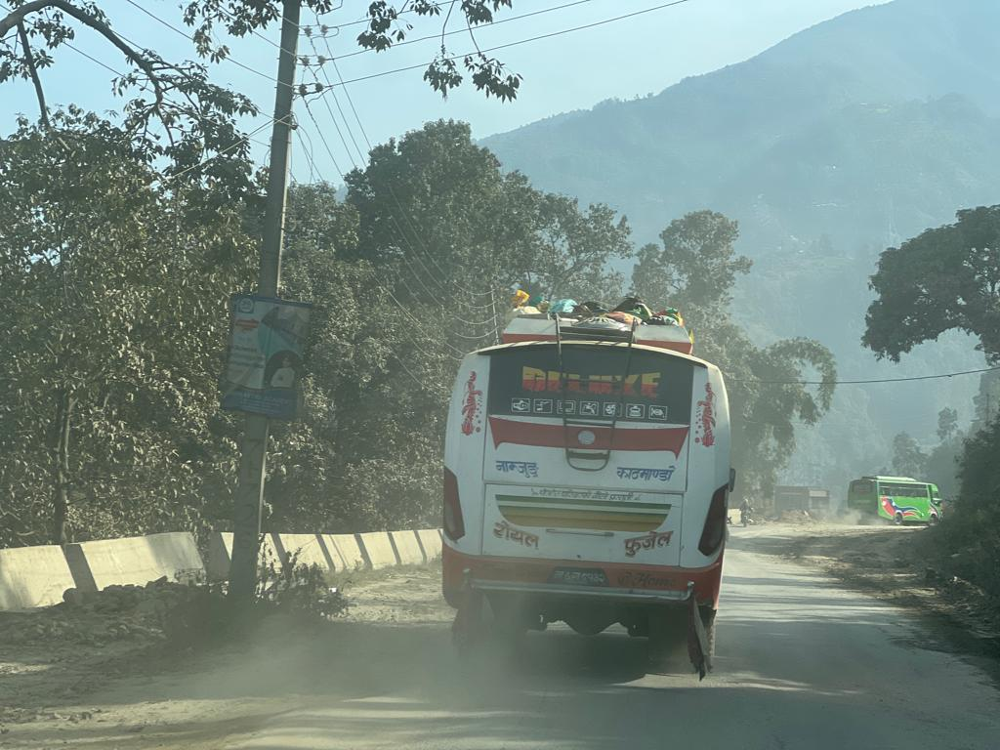

Real Story · 中文
有些画面，不需要解释太多。
06/12/2023，我在 Kathmandu 探索的时候， 看到一个让我立刻停下来的画面：巴士车顶上绑着 goats。
那个画面很简单。 一辆巴士、一条路、山的影子、灰尘，还有车顶上的羊。
但它又说了很多东西。 交通、生活、现实、实用主义，还有一种旅程宣传册不会告诉你的 daily road culture。
这种记忆我很喜欢。 它不是景点，不是表演，也不是特别为了游客准备的东西。 它只是当地生活自己长出来的画面。
我看到的时候，只觉得：哇，Nepal 又给我一个小小的惊喜。 路上什么都可能出现，连巴士车顶都有自己的故事。
English Memory Summary
One more roadside lesson.
On 06/12/2023, while exploring Kathmandu, Tuzi noticed goats tied on the roof of a bus. It was funny, strange, practical, and completely part of the living texture of the road.
The scene was not a tourist performance. It was ordinary local life, but seen through the eyes of someone who was still learning how wide the world could be.
In one frame, there was transport, livelihood, improvisation, and a little bit of road absurdity.
Heart Statement
路上的世界，不会照你的想象出现。
有时候它是一座山。 有时候它是一间小店。 有时候，它是一只被绑在巴士车顶上的羊。
The road does not always explain itself. Sometimes it just passes by with goats on the roof.